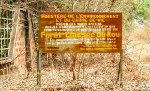

Forêt classée de Kou

Le massif du Kou est la zone couverte par les forets classées de Dindéresso et du Kou.Ces créent et entretiennent un microclimat autour des sources d'eau qui alimentent la ville de Bobo-Dioulasso et ses environs en eau potable.La foret classée est située à environ 15 km de Bobo et elle tire son nom du fleuve Kou qui la traverse.Elle s'étend sur une superficie d'environ 115 ha et regorge d'énormes ressources végétales et animales.Cette foret abrite également la Guinguette qui est un plan d'eau naturel formant une sorte de piscine sur le cours de la rivière du Kou.